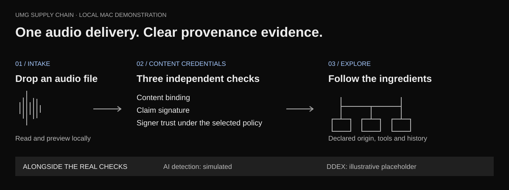

See how Content Credentials inspection can become one module in a music-delivery intake workflow.

Repository foundation is available; the Mac application is being developed in the first implementation PR.
Source and development instructions · Architecture
Personal demonstration repository; not a production UMG service or a claim of C2PA product conformance. Supplied audio is not distributed.